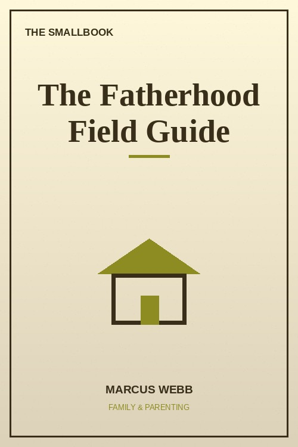

Why Did The Lead in the Water: Flint and the Long History of Poisoned Children Fail?
The Poison in the Paint and the Petrol
What happened
Lead is a neurotoxin with no safe level of exposure in children, known to damage developing brains for over a century. It was nevertheless added to petrol from the 1920s, over the objections raised at its introduction, and kept in paint for decades after the evidence hardened, because industry organised doubt and regulators accommodated it; the scientist Clair Cameron Patterson, who proved the contamination of the modern environment, was fought by the lead industry for years. The bookend case in this autopsy is Flint, Michigan: in April 2014, state appointed emergency managers switched the city's water source to the Flint River without corrosion control to save money. Residents immediately reported rashes, odours and illness, and were told the water was safe while officials exchanged emails managing the message. Independent testing by university researchers and a local paediatrician, Dr Mona Singh, who proved children's blood lead levels had spiked, forced acknowledgment. A state of emergency followed in 2016, criminal charges against officials, and a settlement of over 600 million dollars. Flint's pipes are being replaced; the children's exposure cannot be. The through line from leaded petrol to Flint is one sentence: institutions protected the cheap thing and billed the children's brains.
The fatal mistake
In Flint the decision chain chose savings over chemistry: corrosion control costing perhaps a hundred dollars a day was omitted, and the omission converted a river switch into mass poisoning. Officials then protected the decision rather than the population, dismissing residents, massaging samples and attacking messengers, the standard sequence by which a technical failure becomes a moral one. The longer history shares the shape: the lead industry funded uncertainty for half a century, regulators required proof of harm beyond doubt while exposure continued by default, and poor and minority communities absorbed the dose because their complaints were the cheapest to ignore. In both eras, the system worked as priced.
The lesson
For irreversible harms, the burden of proof belongs on the exposure, not on the exposed. A child's brain does not grant extensions while committees deliberate. Listen to the residents' data before the institution's reassurance; in Flint the citizens were right for eighteen months against the entire apparatus, and the two professionals who vindicated them, a paediatrician and an engineer, did so with the community's own samples. Corrosion control, like all unglamorous prevention, is invisible until it is absent. Fund the invisible line items of civilisation first: they are the civilisation.
The antidote book

Babies do not need a hero. They need a present, competent, boringly reliable man who can change a nappy at 3 a.m. and apologise at 3 p.m. Marcus Webb wrote the manual he was handed nowhere.
READ THE SUMMARY OPEN INTERACTIVE BOOKQuestions people ask about The Lead in the Water: Flint and the Long History of Poisoned Children
Why did The Lead in the Water: Flint and the Long History of Poisoned Children fail? In Flint the decision chain chose savings over chemistry: corrosion control costing perhaps a hundred dollars a day was omitted, and the omission converted a river switch into mass poisoning. Officials then protected the decision rather than the population, dismissing residents, massaging samples and attacking messengers, the standard sequence by which a technical failure becomes a moral one. The longer history shares the shape: the lead industry funded uncertainty for half a century, regulators required proof of harm beyond doubt while exposure continued by default, and poor and minority communities absorbed the dose because their complaints were the cheapest to ignore. In both eras, the system worked as priced.
How much was lost? A century of children poisoned by paint and petrol
What is the lesson? For irreversible harms, the burden of proof belongs on the exposure, not on the exposed. A child's brain does not grant extensions while committees deliberate. Listen to the residents' data before the institution's reassurance; in Flint the citizens were right for eighteen months against the entire apparatus, and the two professionals who vindicated them, a paediatrician and an engineer, did so with the community's own samples. Corrosion control, like all unglamorous prevention, is invisible until it is absent. Fund the invisible line items of civilisation first: they are the civilisation.
The Lead in the Water: Flint and the Long History of Poisoned Children kyun fail hua? In simple English: In Flint the decision chain chose savings over chemistry: corrosion control costing perhaps a hundred dollars a day was omitted, and the omission converted a river switch into mass poisoning. Officials then protected the decision rather than the population,... The cost was A century of children poisoned by paint and petrol.
Keep digging
More trust and safety failures · Open the full Graveyard
Read the antidote book summary: The Fatherhood Field Guide
Related failures
- Why did The City of Troy fail? ~1180 BC · The Original Free Gift
- Why did Juul fail? 2022 · The $38B Vaping Empire That Vaporized to Zero
- Why did Jet Airways fail? 2019 · The Founder Who Couldn't Let Go
- Why did Cambridge Analytica fail? 2018 · Harvested 87 Million Friends of Friends
- Why did Grenfell Tower and the Cladding Economy fail? 2017 · The Tower Everyone Was Warned About
- Why did Wells Fargo fail? 2016 · 3.5 Million Fake Accounts, Opened by Its Own Staff
They paid full price. You get the lesson in simple English.